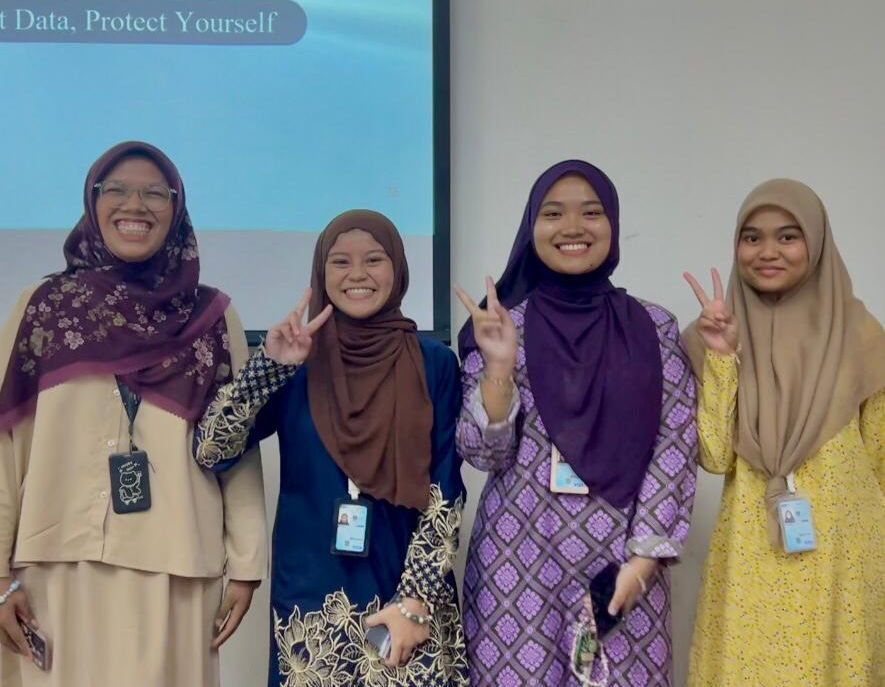
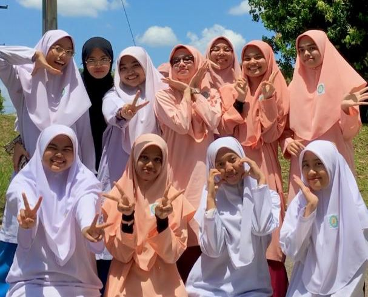
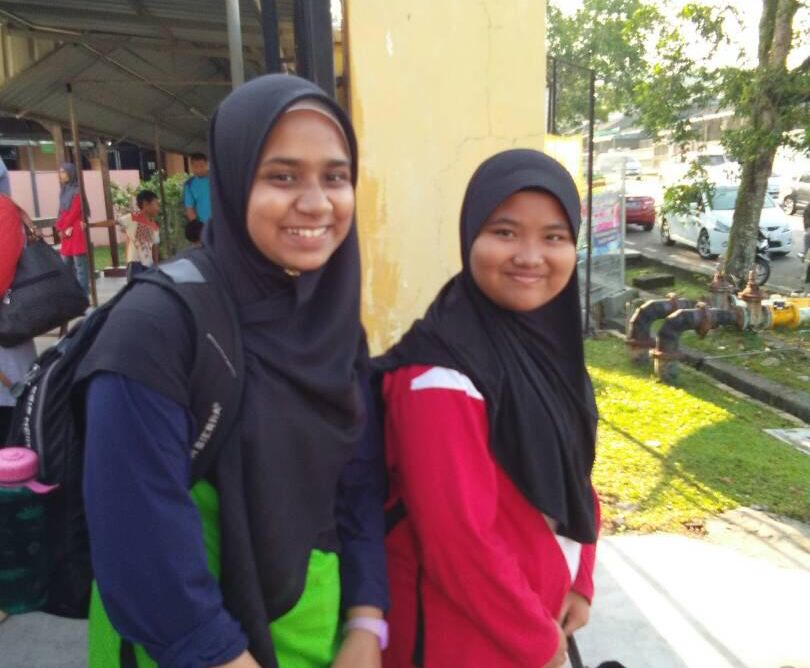

Social CirclesPeers Overview University Circle Secondary School Primary School Photo GalleryClick any link above to jump instantly to that content row block area |
My Friends & PeersLife would be completely incomplete without a supportive circle of friends. Throughout my journey from primary education up to my current university semesters, different groups of people have left lasting impacts on my development. Here is an introductory overview of my friendship networks. 1. University Circle
 Core Companions: Shuhadah, Najihah & AiyuniMy university friend circle was formed because we share the same course and are often placed in the same assignment groups. Spending a lot of time together during classes, discussions and presentations helped us become closer day by day. Since all of us are far from our families, we often support and help each other during difficult times. Their presence made me feel less alone throughout my diploma journey. 2. Secondary School Circle
 Core Companions: NulAzurah, Amirah, Anis, Emmylia, Zalikha, Akhma, Halysha, Maisara, Nafisa, ZarifahMy secondary circle was an important part of my teenage years. We spent most of our time together during school, joining extra curriculum activities, attending classes and more. After school, we often had study sessions together in the evenings to prepare for exams and also enjoyed having meals with each other. Even though everyone is now at different universities and places, we still keep in touch and remain close with one another. Despite the distance, the bond memories we shared hold a special place in my heart. 3. Primary School Circle
 Core Companions: SharifahDuring my primary school years, I only had one close friend who stayed by my side. She was the only person who never judged me and always kept me company. During moments when I was bullied and ignored because of my appearance, her kindness and presence gave me comfort. Sadly, we lost contact after entering secondary school since she moved away and did not have a phone at that time. Although we are no longer in touch, the memories and support she gave during those years remain unforgettable. Friendship Memory Photo GalleryClick on any image to preview our shared activities and snapshots in full resolution:
|